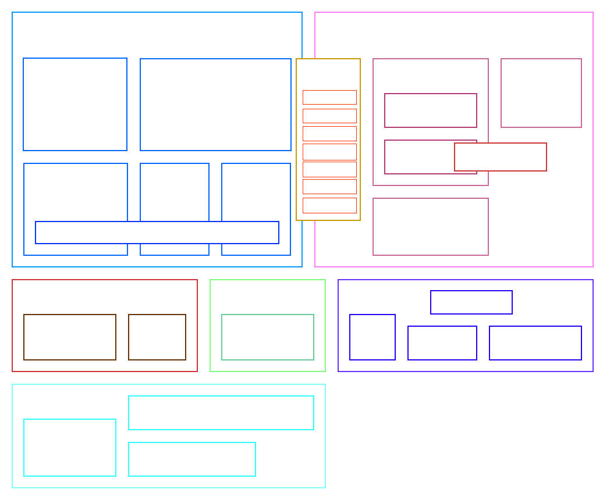

Nota bene: the project is referred as "Ark" and as "ArkScript".
The official public name is "ArkScript" since "Ark" is already being used by
another project
Key features
Arkscript is:
It also has:
- small: the compiler, and the virtual machines fit under 5000 lines, but also small in term of keywords (it has only 10)!
- a scripting language: it's very easy to embed it in your application. The builtin construction is quite easy to understand, so adding your own functions to the virtual machine is effortless
- portable: it produces a bytecode which is run by its virtual machine, like Java but without the
OutOfMemoryException - a functional language: every parameter is passed by value, everything is immutable unless you use
mutto define a mutable variable - powerful: it can handle object oriented programming in a very elegant way with its closures and explicit captures (see examples/church-encoding)
- promoting functionalities before performances: expressiveness often brings more productivity, but performances aren't bad at all
- easy to compile: it takes less than 200ms to compile and check a complex code with a lot of branches and sub-branches of 200 lines.
- a Lisp-like, but with less parentheses:
[...]is expanded to(list ...)and{}to(begin ...). More shorthands will come in the future. - extensible: it is very easy to create a C++ module to use in the language
It also has:
Examples
Fibonacci suite
(let fibo (fun (n)
(if (< n 2)
n
(+ (fibo (- n 1)) (fibo (- n 2))))))
(print (fibo 28)) # display 317811
More or less game
# more or less game
(print "More or less game!")
(import "random.arkm")
(import "Math.ark")
(let number (mod (abs (random)) 10000))
(mut value 0)
(mut essais 0)
(mut continue true)
(while continue {
(set value (toNumber (input "Input a numeric value: ")))
(if (< value number)
# then
(print "More!")
# else
(if (= value number)
# then
{ (print "Bingo!") (set continue false) }
# else
(print "Less!")))
(set essais (+ 1 essais))})
(print "You won in " essais " tries")
More examples are available in the examples/ folder.
Performances
We run benchmarks periodically, check them out!
Contributing
Our beloved contributors
Who worked on
- The standard library:
- The builtins
- The REPL
- The CLI
- The documentation
- The language specification
-
The logos
- Mazz
- The docker integration
- The website
Contributing to the ArkScript standard library
See Coding guidelines if you want to write ArkScript for the library (see folder `lib/std/`).
For performance reasons, some functions might be written in C++, in include/Ark/Builtins/Builtins.hpp and src/Builtins/.
Code structure
Dependencies
- C++17
- CMake >= 3.12
- On Windows: Visual Studio >= 11
-
On macOS versions prior to 10.15,
libc++lacksfilesystemin the standard library.- Install a newer compiler using Homebrew:
brew install gcc && brew link gcc - Pass compiler path to
cmakein the build step:-DCMAKE_CXX_COMPILER=/usr/local/bin/g++-9
- Install a newer compiler using Homebrew:
Building
# first, clone it
~$ git clone --depth=50 --branch=dev https://github.com/ArkScript-lang/Ark.git
~/Ark$ cd Ark
~/Ark$ git submodule update --init --recursive
# building Ark
~/Ark$ cmake -H. -Bbuild -DCMAKE_BUILD_TYPE=Release -DARK_BUILD_EXE=On
~/Ark$ cmake --build build
# installing Ark (might need administrative privileges)
~/Ark$ cmake --install build --config Release
# running
~/Ark$ Ark --help
DESCRIPTION
ArkScript programming language
SYNOPSIS
Ark -h
Ark --version
Ark --dev-info
Ark -r
Ark [-c] [[-d]|-bcr] [-L ] [-f(fac|no-fac)] [-f(aitap|no-aitap)]
OPTIONS
-h, --help Display this message
--version Display ArkScript version and exit
--dev-info Display development information and exit
-r, --repl Run the ArkScript REPL
-c, --compile Compile the given program to bytecode, but do not run
-d, --debug... Increase debug level (default: 0)
-bcr, --bytecode-reader Launch the bytecode reader
-L, --lib Set the location of the ArkScript standard library
-f(fac|no-fac) Toggle function arity checks (default: ON)
-f(aitap|no-aitap) Authorize invalid token after `(' (default: OFF). When ON, only display a warning
LICENSE
Mozilla Public License 2.0
~/Ark$